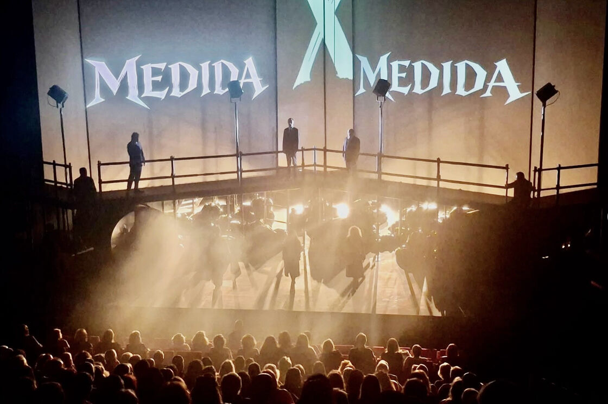
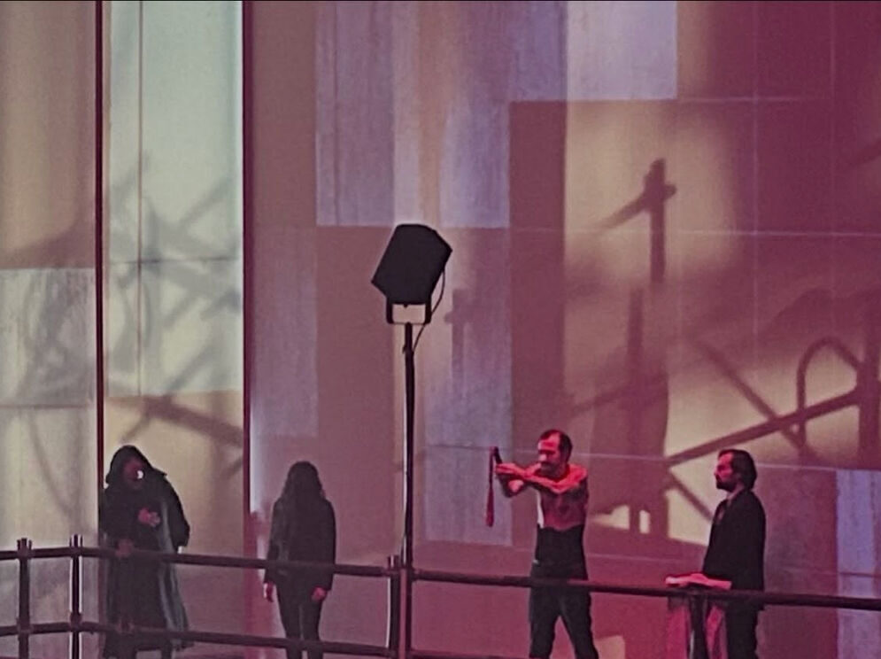
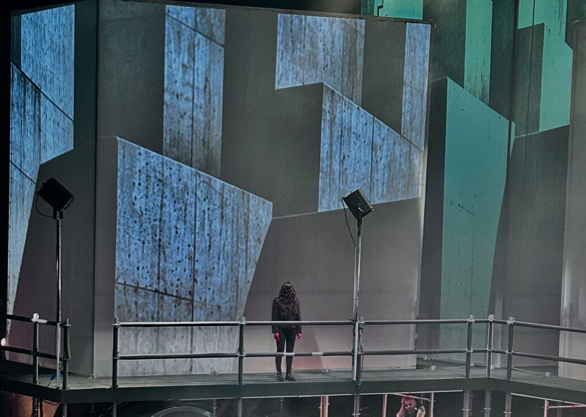
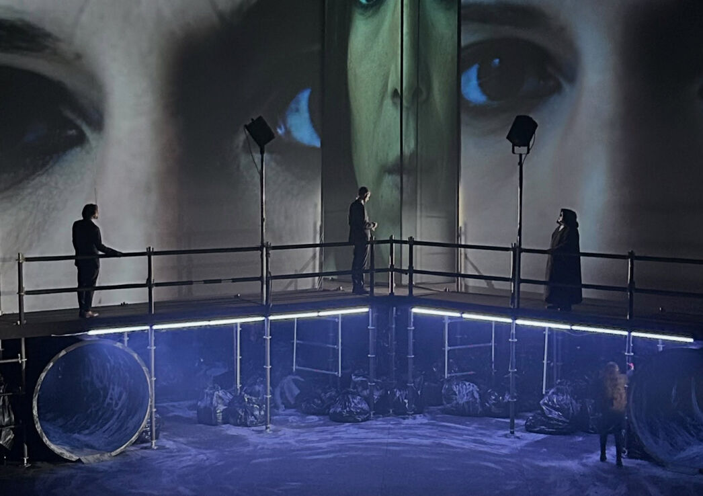
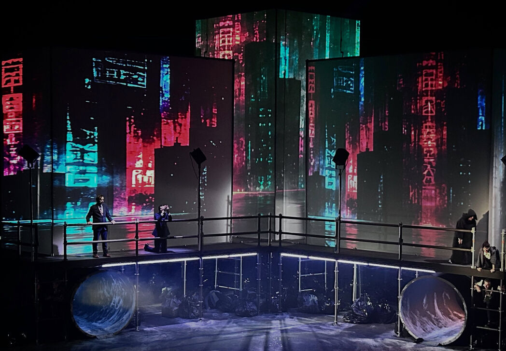
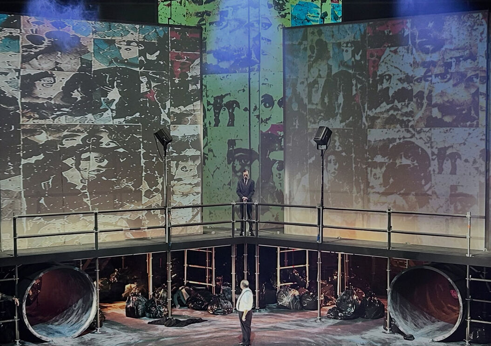
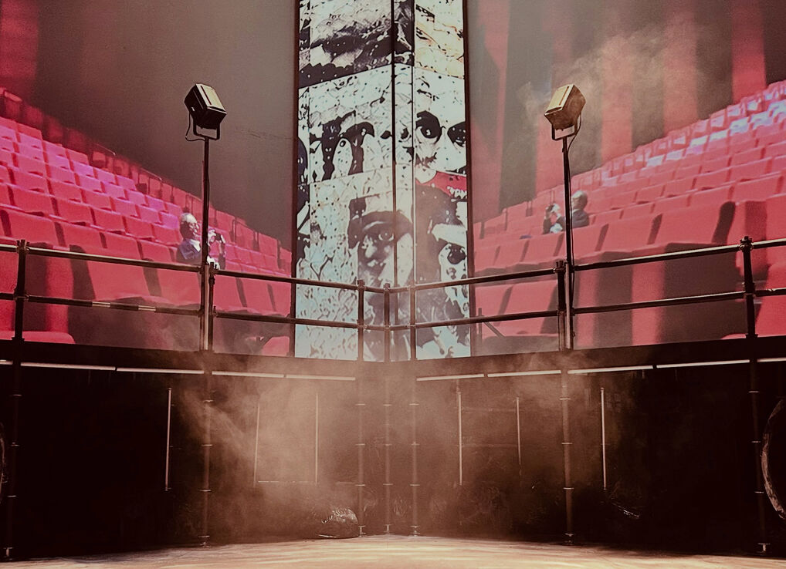
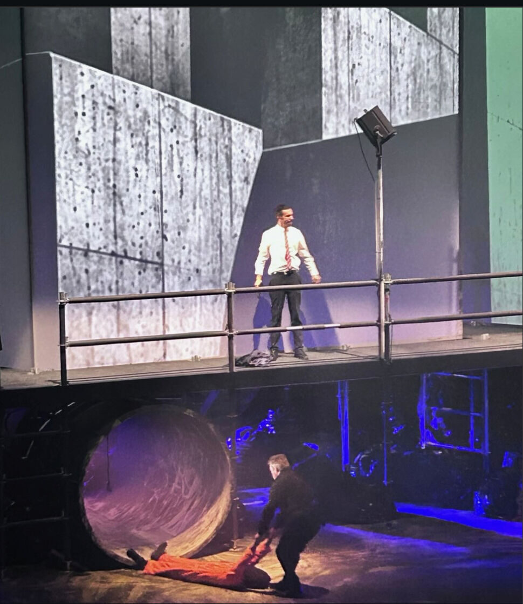
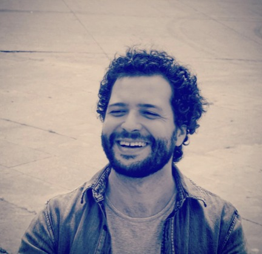

O Palácio de Cidadãos
Feature documentary · dir. Rui Pires · Terratreme Filmes · Cinematography: Pedro Castanheira
MAX Award, Best Portuguese Film — DocLisboa 2024Cinematographer · Director of Photography · Lighting Designer
Diretor de fotografia — cinema, documentário, televisão, dança e teatro. Lisboa.
Feature documentary · dir. Rui Pires · Terratreme Filmes · Cinematography: Pedro Castanheira
MAX Award, Best Portuguese Film — DocLisboa 2024Feature documentary · dir. Sofia Pinto Coelho · Ukbar Filmes · Director of Photography: Pedro Castanheira
Documentary for SWR (German TV) · dir. Lourdes Picareta · Cinematography: Pedro Castanheira
Documentary shot in the West Bank and Israel · dir. Jacobo Echevarría · Director of Photography: Pedro Castanheira
Cinematography reel — Pedro Castanheira
William Shakespeare's Measure for Measure, directed by Ignacio García at Teatro Municipal Joaquim Benite (Almada), 30 October – 29 November 2026. Video design, live cameras and video projection by Pedro Castanheira.
The images follow the shift of power and of the gaze through the play: from architecture and city to surveillance, from excess to rupture, and finally back to the body, the shadow and the wall — Plato's cave as dramaturgy. A hybrid system of live cameras (a phone handled by the actors, remote PTZ surveillance cameras, wired handycams), pre-recorded footage and projection onto the set turns the audience into witnesses of who frames what.
Medida por Medida, de William Shakespeare, encenação de Ignacio García, Teatro Municipal Joaquim Benite, Almada. Videografia, câmaras em direto e projeção vídeo de Pedro Castanheira: da matéria e da cidade à vigilância, ao excesso e à rutura, até regressar ao corpo, à sombra e à parede.








Photos: Pedro Castanheira, José Manuel Castanheira, Rui Mateus.
Photographs and video installations by Pedro Castanheira, Galeria do Teatro Municipal Joaquim Benite, Almada, 10 January – 28 March 2026. Exposição de fotografia e vídeo.

Pedro Castanheira (Lisbon, 1980) is a Portuguese cinematographer and lighting designer working across cinema, documentary, television, dance and theatre.
He holds a Master's in Cinematography from ECAM (Madrid) and is a PhD candidate in Artistic Studies – Art and Mediations at NOVA University Lisbon (FCSH). He studied Portuguese and German Philology at NOVA, with an Erasmus year at Humboldt University of Berlin, and attended the Film Course at ESTC and Photography and Art History at Ar.Co in Lisbon.
He started in cinema on João César Monteiro's final feature, Vai e Vem. He then spent eight years in Madrid as a camera operator for TVE and as a colourist and editor at the CATA post-production studios of SGAE. For the Fundipax Foundation he shot three documentaries in the Middle East (Lebanon, the West Bank and Israel).
In 2007 he won the Kodak Film Spain Award, which took him to Vilmos Zsigmond's Budapest Cinematography Masterclass. He collaborated with Lars von Trier's Zentropa and in 2010 won Best Cinematography at the Alto Vicentino Film Festival for Viejos Perdedores, which led to the Berlinale Talent Campus in 2012.
He co-founded the ParallelB Film School in Madrid, where he taught cinematography, and has led workshops at ESAP (Porto), Associação Corredor Cultural (Ponta Delgada) and Rey Juan Carlos University (Madrid).
He shot Javier Mosqueda's La Fuga del Alquimista, on the restoration of a lost F.W. Murnau film, which took him to Chile. In Santiago he worked for three years in theatre lighting design (Teatro Aleph, Teatro Camino, Lollapalooza Chile) and as director of photography on the science series Hijos de las Estrellas.
Back in Portugal he shot the SIC documentary series Despojos de Guerra and three feature documentaries: Daniel e Daniela (Sofia Pinto Coelho), O Trilho dos Pescadores (Lourdes Picareta, SWR) and O Palácio de Cidadãos (Rui Pires), winner of the MAX Award for Best Portuguese Film at DocLisboa 2024. In lighting and video projection he works with Teatro O Bando and the dance company DdD – Danças em Diálogo. He is the author of Dicionário de Luz, an exhibition of photographs and video made in 2024–2025 and shown at Teatro Municipal Joaquim Benite, Almada (January–March 2026).
Pedro Castanheira (Lisboa, 1980) é diretor de fotografia e desenhador de luz, com trabalho em cinema, documentário, televisão, dança e teatro.
Mestre em Cinematografia pela ECAM (Madrid) e doutorando em Estudos Artísticos – Arte e Mediações (NOVA FCSH). Licenciado em Filologia Portuguesa e Alemã, com pós-graduação em Tradução, e bolseiro Erasmus na Universidade Humboldt de Berlim. Frequentou o Curso de Cinema da ESTC e o curso de Fotografia e História de Arte do Ar.Co.
Começou no cinema na última longa-metragem de João César Monteiro, Vai e Vem. Viveu oito anos em Madrid, onde foi operador de câmara na TVE e colorista e editor nos estúdios CATA da SGAE. Dirigiu a fotografia de três documentários no Médio Oriente para a Fundação Fundipax.
Em 2007 venceu o Prémio Kodak Film Spain e participou na masterclass de Vilmos Zsigmond em Budapeste. Colaborou com a Zentropa, de Lars von Trier, e em 2010 recebeu o Prémio de Melhor Fotografia no Festival de Alto Vicentino com Viejos Perdedores, sendo convidado para o Berlinale Talent Campus de 2012.
Cofundador da escola de cinema ParaleloB, em Madrid, orientou workshops de direção de fotografia na ESAP, na Associação Corredor Cultural e na Universidade Rey Juan Carlos. Viveu três anos em Santiago do Chile, onde trabalhou em desenho de luz para teatro e na série documental Hijos de las Estrellas.
Em Portugal assinou a direção de fotografia da série Despojos de Guerra (SIC) e das longas documentais Daniel e Daniela, O Trilho dos Pescadores e O Palácio de Cidadãos, Prémio MAX de Melhor Filme Português no DocLisboa 2024. No desenho de luz e projeção vídeo colabora com o Teatro O Bando e com a companhia DdD – Danças em Diálogo. É autor de Dicionário de Luz, exposição de fotografia e vídeo com imagens de 2024–2025, apresentada no Teatro Municipal Joaquim Benite, Almada (janeiro a março de 2026).